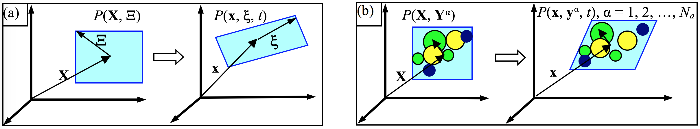

Atomistic field theory
The theoretical foundation of the CAC method is the atomistic field theory (AFT) [1,2], which is an extension of the Irving Kirkwood (IK)'s non-equilibrium statistical mechanical formulation of "the hydrodynamics equations for a single component, single phase system" [3] to a two-level structural description of crystalline materials. It employs the two-level structural description of all crystals in solid state physics, i.e., the well known equation of "crystal structure = lattice + basis" [4]. As a result of the bottom-up atomistic formulation, all the essential atomistic information of the material, including the crystal structure and the interaction between atoms, are built in the formulation. A schematic of micromorphic theory and AFT is given below.
|  |
|---|
| Macro- and micro-motions of a material particle P in (a) micromorphic theory and (b) AFT. Left in (a) and (b) is the reference state at time 0 while right is the deformation state at time {t}. \mathbf{X} and \mathbf{x} are the positions of the mass center of the unit cell, {\Xi} and {xi} are internal positions, \mathbf{Y} and \mathbf{y}^\alpha are positions of atom \alpha with respect to \mathbf{X} and \mathbf{x}, respectively, N_a is the number of atoms in a unit cell. |
The governing equations for conservative systems
The result is a concurrent atomistic-continuum representation of balance laws for both atomistic and continuum coarse-grained domains in the following form [1,2]:
where \mathbf{x} is the physical space coordinate; \mathbf{y}^\alpha (\alpha = 1, 2, \ldots, N_a with N_a being the total number of atoms in a unit cell) are the internal variables describing the position of atom \alpha relative to the mass center of the lattice cell located at \mathbf{x}; \rho^\alpha, \rho^\alpha(\mathbf{v} + \Delta \mathbf{v}^\alpha), and \rho^\alpha e^\alpha are the local densities of mass, linear momentum and total energy, respectively; \mathbf{v} + \Delta \mathbf{v}^\alpha is the atomic-level velocity and \mathbf{v} is the velocity field; \mathbf{f}_\mathrm{ext}^\alpha is the external force field; \mathbf{t}^\alpha and \mathbf{q}^\alpha are the stress and heat flux due to the homogeneous deformation of lattice, respectively; \mathbf{\tau}^\alpha and \mathbf{j}^\alpha are the stress and heat flux due to the reorganizations of atoms within the lattice cells, respectively.
For monatomic crystals, which PyCAC can simulate, \mathbf{y}^\alpha = \mathbf{0} and N_a = 1; the governing equations reduce to
For conservative systems, i.e., a system in the absence of an internal source that generates or dissipates energy, the AFT energy equation is equivalent to the AFT linear momentum equation. Because of its current features, only the first two governing equations are explicitly implemented into PyCAC. Employing the classical definition of kinetic temperature, which is proportional to the kinetic part of the atomistic stress, the linear momentum equations can be expressed in a form that involves the internal force density \mathbf{f}_\mathrm{int}^\alpha and temperature T [5-7],
where \mathbf{u}^\alpha is the displacement of the \alphath atom at point \mathbf{x}; the superposed dots denote the material time derivative; \Delta V is the volume of the finite-sized material particle (the primitive unit cell for crystalline materials) at \mathbf{x}; k_\mathrm{B} is the Boltzmann constant; \gamma^\alpha = \rho^\alpha / \sum^{N_a}_{\alpha = 1} \rho^\alpha, and \mathbf{f}_\mathrm{int}^\alpha is the internal force density and is a nonlinear nonlocal function of relative atomic displacements.
For systems with a constant temperature field or a constant temperature gradient, the temperature term has the effect of a surface traction on the boundary or a body force in the interior of the material [6]. Denoting the temperature term in the above equation as \mathbf{f}_\mathrm{T}^\alpha(\mathbf{x}) and the finite element shape function as \Phi_\xi(\mathbf{x}), the Galerkin weak form of the above equation can be written as
where \Omega(\mathbf{x}) is the simulation domain; the integrals can be evaluated using numerical integration methods such as Gaussian quadrature, leading to a set of discretized governing equations with the finite element nodal displacements as the unknowns to be solved. Note that in PyCAC, the \mathbf{f}_\mathrm{T}^\alpha(\mathbf{x}) term has not yet been implemented as (i) the effect on mechanical properties in a constant temperature field is small and (ii) work is underway to compare different descriptions of temperature in the coarse-grained domain.
The accuracy, efficiency, and stability of the CAC simulator are then determined by the two approximations: the shape function and the numerical integration. Simulation results can be displayed in terms of finite elements, which can also be mapped back to atomic positions and be used to plot the atomic trajectories. With the only constitutive relation being the nonlocal atomic force-displacement relation, continuity between elements in the usual finite element method is not required. Consequently, nucleation and propagation of dislocations and/or cracks can be simulated via sliding and separation between finite elements.
AFT and the equilibrium ensembles
The local densities defined in the Irving and Kirkwood formulations are ensemble averaged point functions. The ensemble averaging was described by Irving and Kirkwood as "repeating the observations many times" [3]. In the early version of the AFT formulation [1], the local densities were also defined as ensemble averages and hence the governing equations were written in terms of ensemble-averaged local densities. In the later version of the AFT formulation [2], the local densities are instantaneous quantities, according to argument by Evan and Morris [8], who wrote "\ldots the reason for considering instantaneous expressions is two-fold. The fluxes are based upon conservation laws and these laws are valid instantaneously for every member of the ensemble. They do not require ensemble averaging to be true. Secondly, most computer simulation involves calculating system properties from a single system trajectory. Ensemble averaging is almost never used because it is relatively expensive in computer time".
Note that the AFT local densities and governing equations were derived as an extension of the Irving and Kirkwood's formulation of the equations of hydrodynamics. Consequently, they differ from other statistical mechanical formulations that follow the Gibbs' equilibrium statistical theory of ensembles. Popular equilibrium ensembles include (i) the microcanonical ensemble, which describes a systems isolated from its surroundings and governed by Hamilton's equations of motion (NVE), (ii) the canonical ensemble, which describe a system in constant contact with a heat bath of constant temperature (NVT), and (iii) the isothermal-isobaric ensembles, which describes systems in contact with a thermostat at temperature T and a barostat at pressure P (NPT) [9]. These ensembles, known as equilibrium ensembles and allowing a wide variety of thermodynamic and structural properties of systems to be computed, can be realized in dynamic CAC, in which a finite temperature can be achieved via lattice dynamic-based shape functions [10]. Alternatively, in the current code, a Langevin thermostat is realized while a constant pressure/stress is maintained via a Berendsen barostat.
References
- Youping Chen, James Lee. Atomistic formulation of a multiscale theory for nano/micro physics, Philos. Mag. 85 (2005) 4095-4126
- Youping Chen. Reformulation of microscopic balance equations for multiscale materials modeling, J. Chem. Phys. 130 (2009) 134706
- J.H. Irving, Jhon G. Kirkwood. The statistical mechanical theory of transport processes. IV. The equations of hydrodynamics, J. Chem. Phys. 18 (1950) 817-829
- Charles Kittel. Introduction to Solid State Physics, 1956: John Wiley & Sons, Inc
- Qian Deng, Coarse-graining atomistic dynamics of fracture by finite element method: Formulation, parallelization and applications, Ph.D. Dissertation, University of Florida, 2011
- Liming Xiong, Youping Chen. Coarse-grained simulations of single-crystal silicon. Modelling Simul. Mater. Sci. Eng. 17 (2009) 035002
- Liming Xiong, Youping Chen, James D. Lee. Atomistic simulation of mechanical properties of diamond and silicon carbide by a field theory, Modelling Simul. Mater. Sci. Eng. 15 (2007) 535-551
- Denis J. Evans, Gary P. Morriss. Statistical Mechanics of Nonequilibrium Liquids, 2008: Cambridge University Press
- Mark E. Tuckerman. Statistical Mechanics: Theory and Molecular Simulation, 2010: Oxford University Press
- Xiang Chen, Adrian Diaz, Liming Xiong, David L. McDowell, Youping Chen. Passing waves from atomistic to continuum, J. Comput. Phys. 354 (2018) 393-402